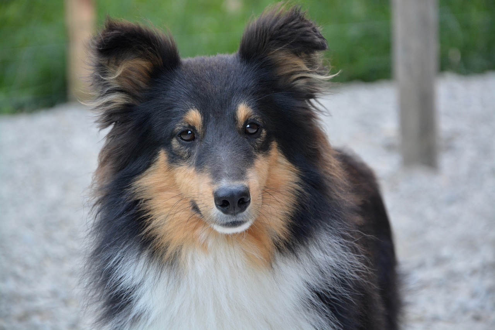
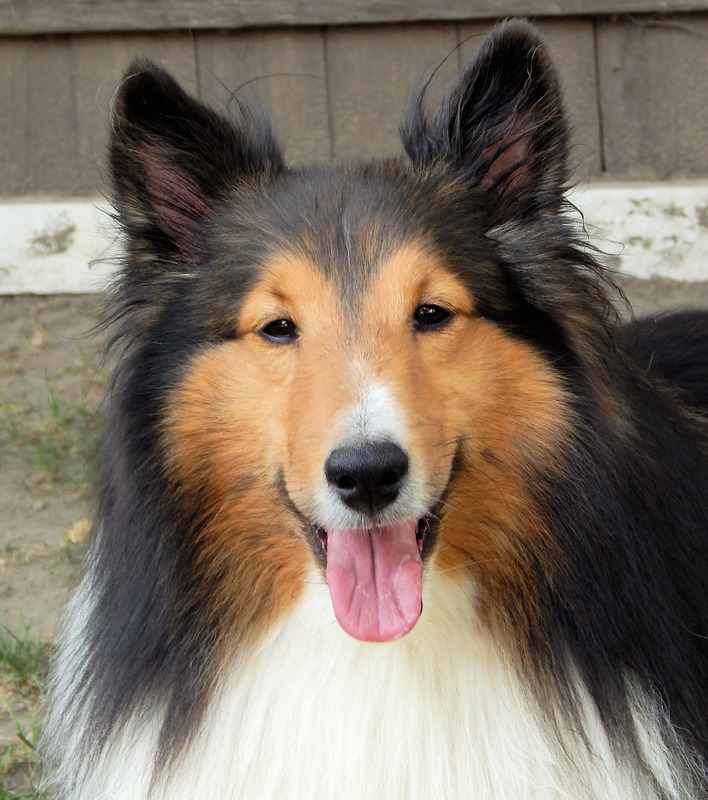

Pros of Shelties:
- Conveniently-sized, light on feet, and graceful
- Lovely feathered coat in a variety of striking colors
- Athletic and animated, a swift light-footed runner and jumper
- Has a "soft" personality (sweet, gentle, sensitive)
- Bright and attentive and learns very quickly
Cons of Shelties:
- Can be highstrung and neurotic
- "Separation anxiety" (destructiveness and barking) when left alone too much
- Shy or fearful
- Excessive sensitivity to stress and loud voices
- Chases things that move (instinctive herding behaviors)
- Barks
- Requires lots of brushing and combing
- Heavy shedding

As you can see, Shelties are an adorable, strong contender. However, they are not immune to a long list of
undesirable traits.